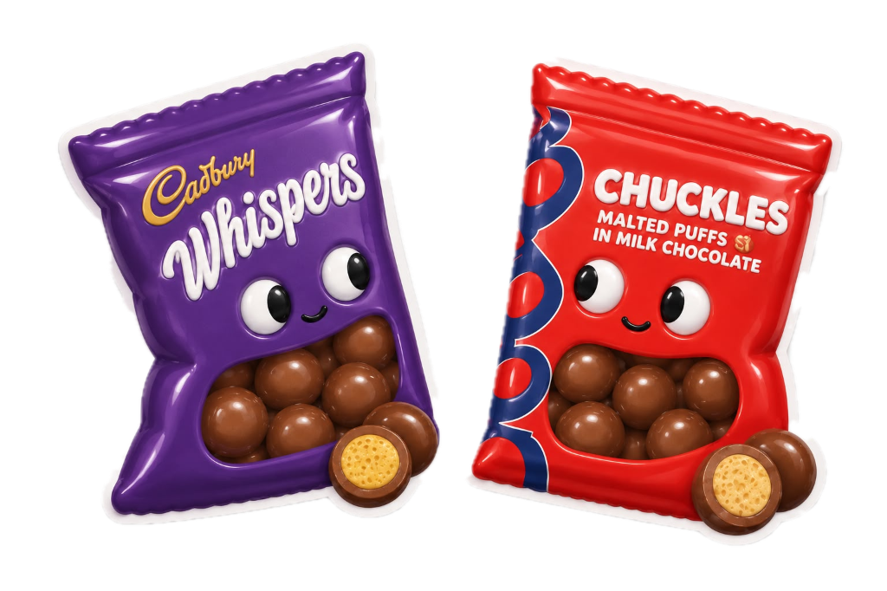

Chuckles vs. Whispers
A blind taste test study. 25 participants. One clear winner.
Two unlabelled bags were prepared: Bag 1 held Cadbury Whispers, Bag 2 held Woolworths Chuckles. Participants identified contents and recorded a preference without seeing packaging.

People can taste the difference. They just can't name it.
Sensory contrast is real. Brand identification is not.
72% of participants (18 of 25) clearly perceived a difference between the two bags. Yet only 52% (13 of 25) correctly named both treats. An additional 20% tasted a distinct difference but had the brands completely reversed. The palate detects real contrast between the two chocolates, but correctly identifying which is Woolworths and which is Cadbury is essentially a coin toss (p = 0.043 vs. 50% random baseline).
18 of 25 participants
13 of 25 (coin toss)
Those who can tell, overwhelmingly choose Chuckles.
Connoisseur conviction: 9 to 2 in favour of Chuckles.
Among the 13 participants who correctly named both bags, 11 expressed a definitive taste preference. Of those 11, 9 chose Chuckles (81.8%) and only 2 chose Whispers. When the palate can reliably distinguish the products, Chuckles dominates by a four to one margin. This is statistically significant (exact binomial p = 0.033; 95% CI: 48.2% to 97.7%).
Preferences among correct identifiers (n = 11 with preference)
9 Chuckles | 2 Whispers • 4:1 ratio
People tend to prefer whichever bag they believe is Chuckles.
Brand expectation shapes taste perception.
Of the 16 participants who expressed a preference, 62.5% (10 of 16) preferred whichever bag they believed was Chuckles, even if their identification was incorrect. Consumers associate the Woolworths premium brand with higher enjoyment before they have even consciously evaluated the taste. The dashed lines below highlight participants whose mental preference contradicted the actual brand they were eating.
A 9% price premium yields twice the preference share.
The Woolworths premium is taste-validated, not marketing-driven.
Chuckles retails at roughly R0.47 per gram versus R0.43 for Whispers, a premium of approximately 9.3%. In blind testing, Chuckles captured 68.8% of all expressed preferences (11 vs. 5). A modest price difference of less than 10% yields more than double the preference share, a 120% preference advantage and a 2.2x ratio in favour of Chuckles.
When uncertain, people assume Chuckles.
Chuckles is the mental default brand.
Of the 7 participants who perceived both bags as identical, 6 guessed both were Chuckles and only 1 guessed both were Whispers. All 7 reported no preference, confirming they answered honestly. When the palate offers no clear signal, the mind fills the gap with the most recognisable brand.
Default brand assumption among identical guessers (n = 7)
All 7 participants reported no taste preference, confirming neutral honest responses.
Women identified correctly more often than men.
Gender is the clearest demographic signal in the data.
Women correctly identified both bags at a rate of 71.4% (5 of 7), compared to 44.4% for men (8 of 18). The chart below compares the outcome distribution (correctly identifying both brands, identifying them as identical, or inverting the brands) between women and men.